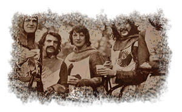
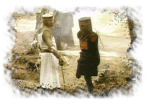

| Facts
from the 1500s
Contributed
by: Samuel P. Mallare
Next time you are washing your hands and complain because
the water temperature isn't just how you like it, think about
how things used to be.... Here are some facts about the 1500s:
Most people got married in June because they took their yearly
bath in May and still smelled pretty good by June. However,
they were starting to smell, so brides carried a bouquet of
flowers to hide the body odor. Baths consisted of a big tub
filled with hot water. The man of the house had the privilege
of the nice clean water, then all the other sons and
men, then the women and finally the children-last of all the
babies. By then the water was so dirty you could actually
lose someone in it-hence the saying, "Don't throw the
baby out with the bath water."
Houses had thatched roofs-thick straw, piled high, with no
wood underneath. It was the only place for animals to get
warm, so all the dogs, cats and other small animals (mice
rats, and bugs lived in the roof. When it rained it became
slippery and sometimes the animals would slip and fall off
the roof-hence the saying "It's raining cats and dogs."
There was nothing to stop things from falling into the house.
This posed a real problem in the bedroom where bugs and other
droppings could really mess up your nice clean bed. Hence,
a bed with big posts and a sheet hung over the top afforded
some protection. That's how canopy beds came into existence.
The floor was dirt. Only the wealthy had something other than
dirt,
hence the saying "dirt poor."
The wealthy had slate floors that would get slippery in the
winter when wet, so they spread thresh on the floor to help
keep their footing. As the winter wore on, they kept adding
more thresh until when you opened the door it would all start
slipping outside. A piece of wood was placed in the entry
way-hence, a "thresh hold."
They cooked in the kitchen with a big kettle that always hung
over the fire. Every day they lit the fire and added things
to the pot. They ate mostly vegetables and did not get much
meat. They would eat the stew for dinner, leaving leftovers
in the pot to get cold overnight and then start over the next
day. Sometimes the stew had food in it that had been there
for quite a while-hence the rhyme, "peas porridge hot,
peas porridge cold, peas porridge in the pot nine days old."
Sometimes they could obtain pork, which made them feel quite
special. When visitors came over, they would hang up their
bacon to show off. It was a sign of wealth that a man "could
bring home the bacon." They would cut off a little to
share with guests and would all sit around and "chew
the fat."
Those with money had plates made of pewter. Food with a high
acid content caused some of the lead to leach onto the food,
causing lead poisoning and death. This happened most often
with tomatoes, so for the next 400 years or so, tomatoes were
considered poisonous.
Most
people did not have pewter plates, but had trenchers, a piece
of wood with the middle scooped out like a bowl. Often trenchers
were made from stale paysan bread which was so old and hard
that they could use them for quite some time. Trenchers
were never washed and a lot of times worms and mold got into
the wood and old bread. After eating off wormy moldy trenchers,
one would get "trench mouth."
Bread was divided according to status. Workers got the burnt
bottom of the loaf, the family got the middle, and guests
got the top, or "upper crust."
Lead cups were used to drink ale or whiskey. The combination
would sometimes knock them out for a couple of days. Someone
walking along the road would take them for dead and prepare
them for burial. They
were laid out on the kitchen table for a couple of days and
the family would gather around and eat and drink and wait
and see if they would wake up-hence the custom of holding
a "wake."
England is old and small and they started out running out
of places to bury people. So they would dig up coffins and
would take the bones to a "bone-house" and reuse
the grave. When reopening these coffins, one out of 25 coffins
were found to have scratch marks on the inside and they realized
they had been burying people alive. So they thought they would
tie a string on the wrist of the corpse,lead it through the
coffin and up through the ground and tie it to a bell. Someone
would have to sit out in the graveyard all night (the "graveyard
shift") to listen for the bell; thus, someone could be
"saved by the bell" or was considered a "dead
ringer".
images
from "Monty Python and the Holy Grail"
© 1975 Cinema 5 U.K.
|